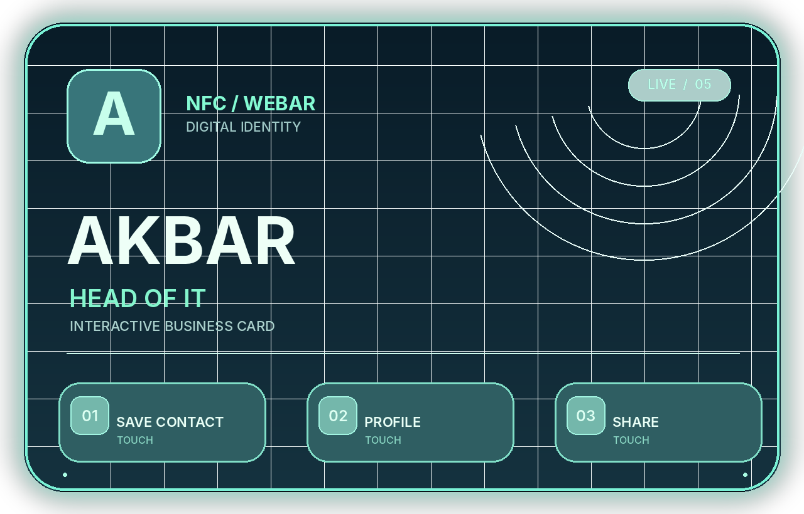

VISITCARD / V5 / DESIGN PREVIEW
AR-визитка
Демонстрационный вид виртуальной 3D-карточки. В камере она привязывается к HIRO-маркеру.

Контакты пока демонстрационные. Публичная версия не содержит личных телефонов или рабочих секретов.
Демонстрационный вид виртуальной 3D-карточки. В камере она привязывается к HIRO-маркеру.

Контакты пока демонстрационные. Публичная версия не содержит личных телефонов или рабочих секретов.